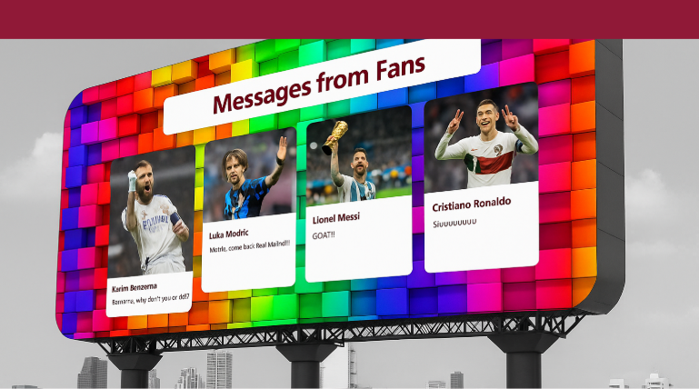

FIFA가 2022 카타르 월드컵 개막을 앞두고, 축구 팬들과 함께 만드는 특별한 헌정 프로젝트 ‘A Nation’s Legacy’를 공개했다. 이번 프로젝트는 리오넬 메시, 크리스티아누 호날두, 루카 모드리치, 카림 벤제마 등 세계적인 스타 선수들의 마지막 여정을 기념하며, 팬 참여를 중심으로 한 새로운 방식의 헌정 형식을 제안한다.
가장 눈에 띄는 콘텐츠는 디지털 타임캡슐 플랫폼 ‘Dear Legend’다. 팬들은 FIFA가 마련한 웹페이지에서 선수를 선택해 메시지와 사진을 업로드할 수 있으며, 이는 도하 시내 초대형 스크린에 실시간으로 게시된다. FIFA는 “팬의 목소리는 기억의 캡슐이 된다”며 SNS 해시태그 #DearLegend를 통한 참여를 독려하고 있다.
또 하나의 핵심은 팬들이 직접 레전드의 명장면을 재현하는 ‘Nation’s Tracker’ 캠페인이다. 팬들은 메시, 호날두, 모드리치, 벤제마의 드리블이나 골 장면을 모방한 영상을 SNS에 공유하고, FIFA는 이를 투표를 통해 시상할 계획이다. 해시태그는 #Nationstracker가 사용된다.
FIFA는 이번 프로젝트의 흐름과 감동을 담은 3부작 다큐멘터리 시리즈도 제작했다. 유튜브를 통해 순차적으로 공개될 이 시리즈는 팬의 시선과 선수의 역사를 하나로 묶는 이야기로 구성된다.
Part 1 'A Nation’s Hero'에서는 마라도나의 1986년 서사부터 메시의 대표팀 복귀와 2022 월드컵 우승까지, 격변 속 아르헨티나 축구 영웅들을 조명한다.
Part 2 'A Nation’s Fighter'는 피구와 호날두를 중심으로 포르투갈 축구의 부상과 성장기를 다룬다.
Part 3 'Who is GOAT?'는 단 1분 분량의 짧은 영상으로, 무수한 질문들을 빠르게 교차 편집한 뒤 단 하나의 질문—"Who is GOAT?"—을 남긴다.
FIFA 관계자는 “이번 캠페인은 단순한 선수 헌정이 아니라 팬과 함께 완성하는 축구 문화”라며 “진정한 월드컵의 유산은 팬들의 손끝에서 살아 숨 쉬게 될 것”이라고 강조했다.